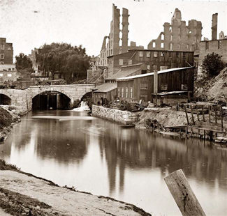
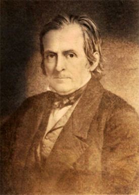

|
Slavery never flourished in the western portion of Virginia that in 1863 became
the new state of West Virginia. The inhospitable mountain environment
concentrated the institution into four regions: Shenandoah, South Branch,
Kanawha, and Greenbrier. Slavery, if not widespread, nevertheless strongly
determined western Virginia's political destiny. From the American Revolution
onward, slavery permeated every phase of Virginia's politics and supplied the
basic source of the social, economic, and political grievances instrumental in
the ultimate breakup of Virginia.
Quantitatively, in 1850 slavery in western Virginia attained its highest
numerical level with 20,500 slaves, or 6.79 percent of a total population of
302,313. In 1860 the number of slaves declined to 4.88 percent of the aggregate
population. In only seven western Virginia counties did the slave population in
1850 constitute more than 10 percent of the aggregate population, and these
counties contained 70 percent of all slaves in the region. In 1850 Jefferson
County had the largest number of slaves (4,341) in the Shenandoah Valley region;
Hampshire County had the most slaves (1,433) in the South Branch region; Kanawha
Salines County had the most slaves (3,140) in the Kanawha region; and Greenbrier
County had the most slaves (1,317) in the Greenbrier region.
In the Shenandoah Valley, tidewater Virginians, migrating between 1768 and
1810, brought great numbers of slaves to carve plantations from ancestral lands
often acquired from Fairfax proprietors. Slaves sometimes preceded the gentry to
clear land and to construct houses. The transplanted tidewater aristocrats
rapidly exploited the fertile, well-watered limestone soil that yielded
bountiful harvests of wheat, corn, and livestock. Gangs of slaves under
overseers cleared the forest, rolled and skidded rocks from fields, broke
rockbreaks, and split rails for fencing. They plowed the thousands of acres,
harnessed the livestock, and reaped the crops. Performing all labor supporting
the domestic establishment and the sometimes opulent life-style of their
masters, slaves perfected numerous crafts; endlessly cut wood to fuel the huge
houses; and raised, preserved, and cooked the food. Though the life-style was
less extensive than in Berkeley and Jefferson counties, large slaveholders on
the South Branch and on the limestone soil belt of Greenbrier and Monroe
employed their chattels in similar ways. Obstacles to transportation caused
their agricultural economy to be oriented largely toward livestock raising.
Extensive land-clearing occupied slaves until the Civil War.
|

Slaves were often used in the industrial sector
in Kanawha, including this manufacturing plant.
|
Throughout the trans-Allegheny, slaves labored in the domestic service of
those who could afford them. Here, masters generally held slaves in small
numbers and worked beside them on farms and in small manufactories engaged in
blacksmithing, milling, and tanning. In the southwest below the Great Kanawha
River, bondsmen joined their masters in labor-intensive tobacco culture. The
widespread industrial use of slaves in the Great Kanawha salt industry at Malden
was exceptional.
Antislavery sentiment, even in areas of slave concentration, persisted in
western Virginia from colonial times. Germans, Quakers, Methodists of various
types, and residents originating from New England had moral objections to
slavery. Virginia's militia regulations and commitment to slavery tended to
encourage the western migration of such people, but a sufficient minority
remained to affect antebellum opinion. Western Virginians witnessed one of the
cruelest scenes associated with the institution when slave traders drove coffles
from eastern Virginia over their turnpikes to Deep South markets.
Eastern Virginia's continuous repression of western political equality and
its contrived dominance of public policy to protect its "peculiar interest"
galvanized western opinion on slavery. Western Virginians, the majority of whom
had few moral objections to the institution and to whom Northern abolitionists
were anathema, based their opposition on social, political, and economic
realities. Since the Staunton Convention in 1816, western politicians had
awaited political relief for underrepresentation and restricted franchise. The
Constitutional Convention of 1829-1830 accepted the reactionary arguments of
easterners who feared for the safety of their slave property in a democracy. The
eastern counties retained legislative power, however, and the franchise remained
severely restricted. Reapportionment was delayed until 1841, and it occurred
only then with the approval of two-thirds of each legislative house. The
Virginia legislative debates of 1831-1832 over gradual emancipation further
exacerbated the fundamental sectional differences when the east favored a gag
rule and the west opted for post-nati (gradual) emancipation. The west
won an illusory victory, securing a legislative statement rejecting the idea of
perpetual slavery in Virginia, but eschewing practical and immediate action.
Western Virginia's disaffection continued unresolved and her citizens chafed
under the imposed burden of what they charged was undemocratic government and
retarded economic development, while neighboring states prospered and attracted
her citizens. The 1847 pamphlet of Reverend Mr. Henry Ruffner, president of
Washington College in Lexington and a Kanawha native, summarized western
Virginian thoughts on slavery and signaled a proposed change in strategy in
dealing with the problem. If eastern Virginians would never consent to statewide
emancipation, stated Ruffner, perhaps gradual emancipation could be implemented
west of the Blue Ridge Mountain range. Ruffner's Address to the People of
West Virginia attacked slavery for depleting Virginia's white population,
depressing its agricultural income as contrasted with Northern states, retarding
its investment in manufacturing, and discouraging education.
The Constitutional Convention of 1850 wrestled with the same questions on
slavery raised in 1829-1830. Different orators repeated identical arguments.
Westerners won a partial victory by compromising on legislative apportionment:
the west would control the house while the east would dominate the senate. Slave
owners received a major concession that forbade taxation of slaves under twelve
years of age and limited the tax on other slaves to a sum not to exceed the
amount charged on realty assessed at $300. Reapportionment was to occur in 1865
and every tenth year thereafter. Suffrage was extended to all white male adults,
and most offices became elective.
|

Reverend Henry Ruffner
|
The Civil War destabilized the bonds of control, affording West Virginia
slaves de facto freedom and unlimited mobility. For those who could obtain
employment, this disruption converted chattel slavery into wage and share
systems of agriculture. For slaves who remained with their masters, especially
in remote areas, the patterns of work continued as before. Fleeing slaves who
remained in West Virginia tended to congregate in towns. Often free persons of
color with established economic competence helped sustain them. In Clarksburg,
Wheeling, Parkersburg, and other county seats, free and slave blacks practiced a
wide diversity of trades and relied upon domestic service for support. In the
Great Kanawha Valley, blacks continued to mine coal and manufacture salt.
In the Shenandoah Valley, many able-bodied male slaves fled to Northern lines
and states. Some flocked to Harpers Ferry to labor for federal forces and to
enlist in the Union army. While single black males often prospered, black
families who stayed together frequently experienced great hardship. The feeble,
women, and children created a refugee class. Many destitute, land-poor white
families refused to sustain slave dependents without the labor of males. Some
valley landowners encouraged the casual formation of black communities on their
land, to retain labor in the vicinity. Even under these conditions, Northern
missionaries who traveled from tidewater Virginia commented on the relative
well-being of Shenandoah Valley blacks.
Although slavery was fundamentally at the root of sectional grievances,
statemakers attempted to ignore the issue in West Virginia's first
constitutional convention. They feared antagonizing slave-owning westerners and
jeopardizing the movement in Congress. Because the Emancipation Proclamation
never applied to the area, constitutional provisions regarding slavery were
potentially controversial. Delegates Robert Hager and Gordon Battelle, both
Methodist Episcopal clergymen, forced the convention to face the issue. Their
resolutions against future slave importation and gradual emancipation caused the
assembly to accept the free-soil idea in general while ignoring emancipation per
se. Congressional opposition to the statehood bill, led by Charles Sumner and
other abolitionists, moved Senator Waitman Thomas Willey of the Restored
Government of Virginia to offer a gradual emancipation amendment. This provided
that no new slaves were permitted in the state for permanent residence; children
of slaves born in the state after July 4, 1863 would be free; slaves under ten
years of age on that date would be free when they reached age twenty-one; and
slaves over ten years of age and under age twenty-one on July 4, 1863 would
become free when they reached twenty-five. Congress enacted the West Virginia
Bill with the Willey Amendment, and President Abraham Lincoln approved statehood
upon the condition that the constitution be appropriately revised by the
convention and ratified by a state referendum. The reconvened convention
inserted the Willey Amendment into the constitution, but petitioned for
congressional appropriations to compensate slave owners. Slavery legally
continued in West Virginia until February 3, 1865, when the ratification process
of the Thirteenth Amendment spurred the legislature to abolish slavery by
statute.
Source: Randall M. Miller and John David Smith, eds. Dictionary of
Afro-American Slavery (Westport, CT: Praeger, 1997), 806-09.
|